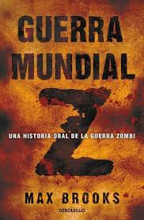

Terror
Sipnosis:
Una novela oscura y mágica,
una inolvidable colaboración entre
dos de los narradores más renombrados
de nuestros días: Guillermo del Toro
y Cornelia Funke.

Sipnosis:
REDRUM
Esa es la palabra que Danny había
visto en el espejo. Y, aunque no
sabía leer, entendió que era un
mensaje de horror. Danny tenía
cinco años, y a esa edad pocos
niños saben que los espejos
invierten las imágenes y menos
aún saben diferenciar entre
realidad y fantasía.

Sipnosis:
Este libro aclara realmente cómo el
doctor Kwang Jingshu descubrió los
primeros casos y se destaparon las
pruebas ocultadas por el gobierno
chino sobre el gran estallido.
También cómo surgió y se propagó
el controvertido Plan Naranja de
supervivencia, fruto de un oscuro
cerebro del apartheid sudafricano.
Sipnosis:
¿Quién o qué mutila y mata a los niños
de un pequeño pueblo norteamericano?
¿Por qué llega cíclicamente el horror
a Derry en forma de un payaso siniestro
que va sembrando la destrucción a su paso?